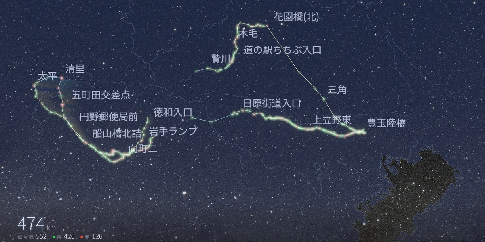
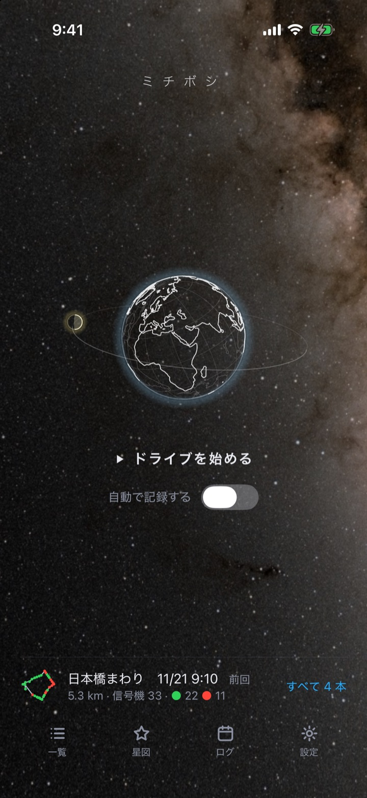
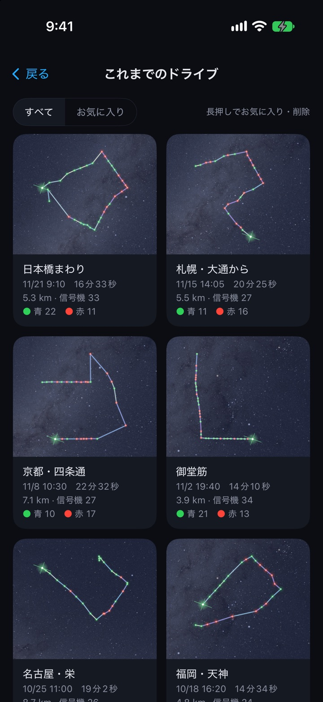
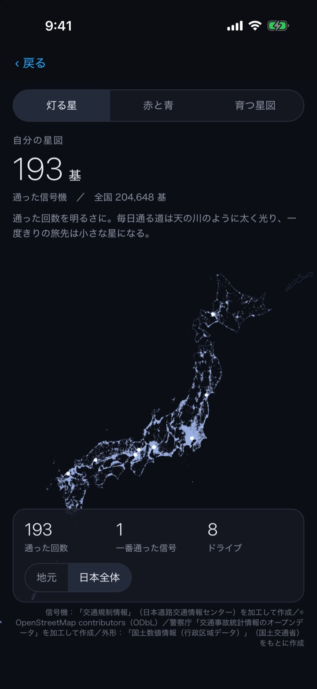

ミチボシ
通った信号機が、星座になる。
iPhone・iPad・Android ／ 日本の App Store・Google Play で近日公開

実際に走ったドライブ「富士見高原」を描き終えたところ（出発地の周りは「自宅の周りを隠す」で隠しています）
走った道が、夜空に残る
車で通った信号機を記録して、星座のような線にして眺めるアプリです。全国の信号機データ（20 万基あまり）の中から、走った道で通った信号機を見つけ、青で抜けた信号は緑、止まった信号は赤の星として結びます。
- 「ドライブを始める」を押すと、画面を消している間も記録を続けます
- 「自動で記録する」をオンにすると、出かけるたびに記録を始め、しばらく止まると終えます（iPhone・iPad）
- おにコレの走行の記録や、GPX ファイルからも取り込めます


ひと目で分かる、その日の信号
- 青で通った信号・赤で止まった信号の数、走行距離、時間が並びます
- お気に入りの印を付けて、お気に入りだけを並べられます
- 削除したドライブは 30 日間、「最近削除した項目」から戻せます
同じドライブを 3D で描いているところ。光の先が、そのとき走っていたところ（音はありません）
走りを、星空にもう一度描く
- 星空の上に、通った信号機を結ぶ光の線を伸ばしていきます
- 線の色は「速度」か「信号間の距離」。高さは標高をもとに強調できます
- カメラは「回る」「追う」「止める」から選べます
- 描いた様子を動画にして共有できます
- 自宅から決めた距離の内側にある信号機は、一覧・3D・動画から隠せます

ミチボシ Pro
380 円買い切り
- 自分の星図：これまでに通った信号機を星にした地図。「灯る星」「赤と青」「育つ星図」の 3 つの見せ方を切り替えられます
- 動画の共有に広告が出ません
- 動画に透かしが入りません
無料版でも、記録の本数に上限はありません。無料版で動画を共有するときは、そのたびに、選んだときだけ短い広告を 1 本見てから共有します。
ご注意
- 運転中は操作しないでください
- 通った信号機と青・赤は、位置情報と信号機データからの推定です。実際の信号の色を記録するものではありません
- 「自動で記録する」は iPhone・iPad だけの機能で、位置情報の「常に」の許可が必要です。バックグラウンドで位置情報を使い続けると、電池の減りが早くなることがあります
- Android では、「ドライブを始める」で記録している間、通知を表示します（画面を消している間も記録を続けるため）。記録を終えると消えます
- 記録は端末の中だけに保存します。運営のサーバーには送りません